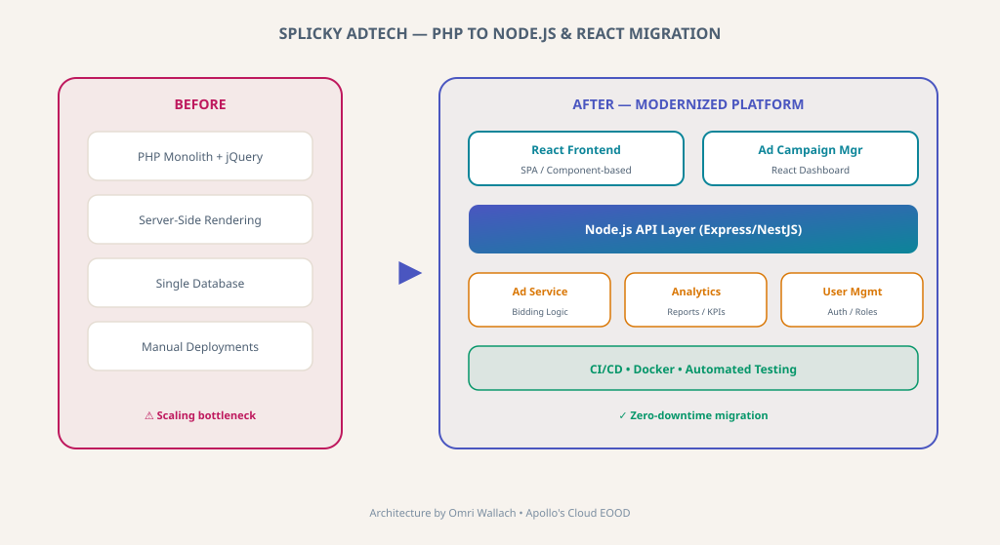

PHP to Node.js & React Migration for Splicky AdTech
Zero-downtime AdTech platform migration from legacy PHP monolith to modern Node.js API and React frontend architecture.

Splicky AdTech — PHP to Node.js & React Platform Migration
Context
Splicky is a mobile-first programmatic advertising platform that required modernization from a legacy PHP stack. The platform handles real-time ad bidding, campaign management, and analytics for advertising clients. I led the migration to a modern Node.js and React architecture.
Engineering Challenges
Zero-Downtime Migration
Migrating a live AdTech platform without disrupting real-time bidding operations or campaign delivery.
Real-Time Performance
Ad bidding requires sub-millisecond response times; the new architecture needed to match or exceed PHP performance.
Frontend Modernization
Replacing server-side rendered PHP templates with a React SPA while maintaining feature parity.
Architectural Solutions
Node.js API Layer
Express/NestJS backend with optimized ad serving and bidding logic.
React Frontend
Component-based SPA for campaign management and analytics dashboards.
Incremental Migration
Strangler pattern for gradual feature-by-feature migration with zero downtime.
CI/CD & Testing
Automated pipelines with Docker containerization for consistent deployments.
Measurable Impact
Zero Downtime
Complete migration without any service interruption for clients.
Modern Stack
React + Node.js enables faster feature development and hiring.
Performance
Maintained sub-millisecond ad bidding response times.